beave-rs
A lightweight Rust message processing framework built around typed handlers.
cargo add beavers --features kafkaPre-release. The API may change until 0.1.0.
Example
Summarize each article on a Kafka topic with an LLM and publish the summaries to another topic:
use beavers::{
App, Classify, Result, Utf8,
adapters::kafka::{KafkaSink, KafkaSinkConfig, KafkaSource, KafkaSourceConfig},
};
async fn summarize(article: String) -> Result<String> {
let summary = call_llm(&format!("Summarize: {article}")).await.retry()?;
Ok(summary)
}
#[tokio::main]
async fn main() -> anyhow::Result<()> {
let articles = KafkaSource::<Utf8, _>::new(KafkaSourceConfig::new(
"localhost:9092",
"summarizer",
["articles"],
));
let summaries = KafkaSink::<Utf8, _>::new(KafkaSinkConfig::new(
"localhost:9092",
"summaries",
));
App::new()
.subscribe("summarize", articles, summaries, summarize)
.run()
.await
}The handler sees only the decoded value. A transient API failure is retried with backoff, and each offset is committed after its summary is published.
Subscriptions
Each Subscription connects one source, one handler, and one sink. An App runs any number of subscriptions side by side and shuts them down together.

Features
- Typed handlers. Write
async fn(Input) -> Result<Output>; decoding, publishing, and acknowledgement are handled for you. - At-least-once delivery. An input is acknowledged only after its output is published.
- Explicit failure handling. Classify errors as retry, reject (dead-letter), or fatal; retries back off.
- Concurrency with ordering. Bounded concurrency, per-key ordering, and a worker pool for blocking handlers.
- Pipelines. Chain subscriptions through in-process channels with end-to-end acknowledgement.
- Operations. Graceful shutdown,
tracingspans,metrics, OpenTelemetry trace propagation, and/livezand/readyzprobes.
Errors
Errors propagated with ? reject the input, which is dead-lettered by default. The handler asks for other outcomes at the call site:
async fn handle(order: Order) -> Result<Output> {
validate(&order).reject()?; // dead-letter now (same as `?`)
let user = db.find_user(order.user_id).await.retry()?; // retry, then dead-letter
Ok(build_output(order, user))
}.fatal()? stops the subscription.
Cargo features
No feature is enabled by default.
kafka | Kafka source and sink |
pulsar | Apache Pulsar source and sink |
rabbitmq | RabbitMQ source and sink |
sqs | Amazon SQS source and sink |
http | HTTP source and sink |
avro | Avro codec |
protobuf | Protobuf codec |
opentelemetry | Trace-context propagation through broker metadata |
health | /livez and /readyz endpoints |
testing | Fabricated broker records for handler tests |